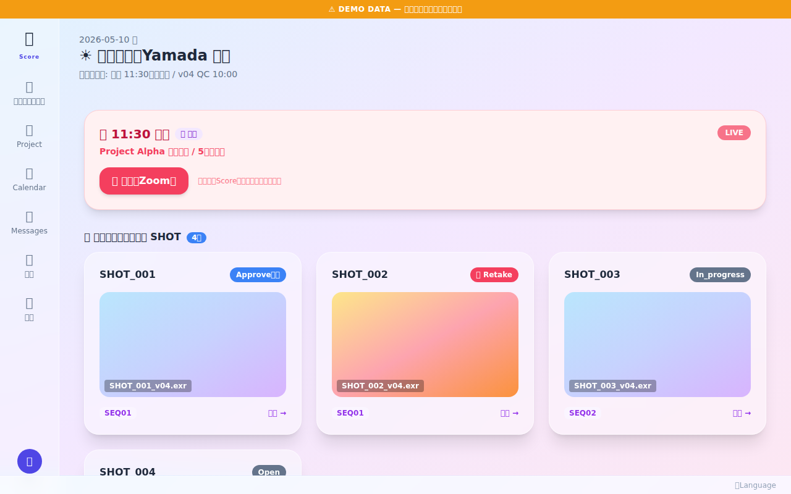
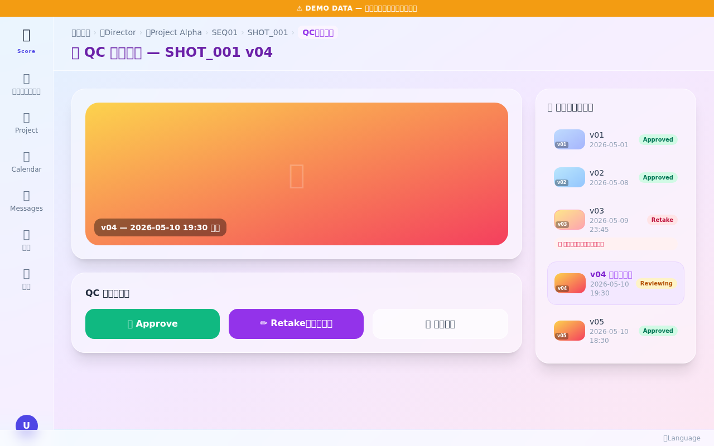
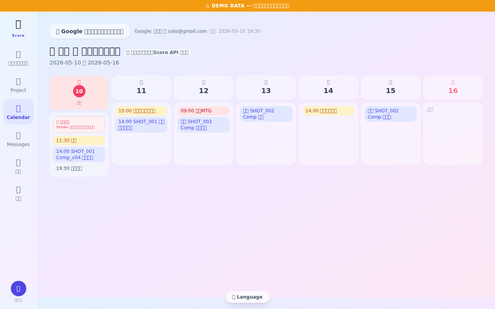
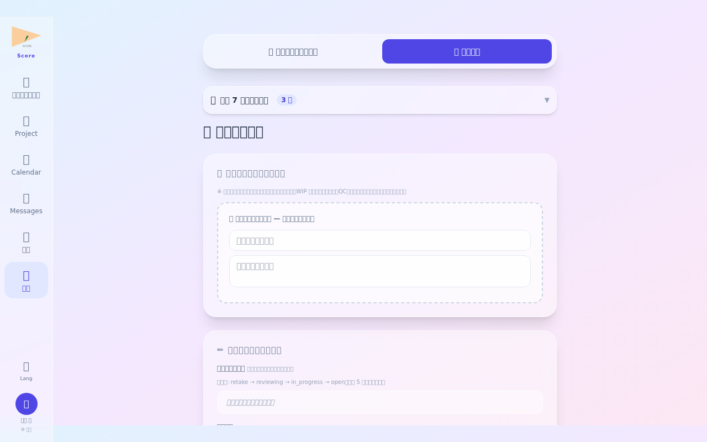
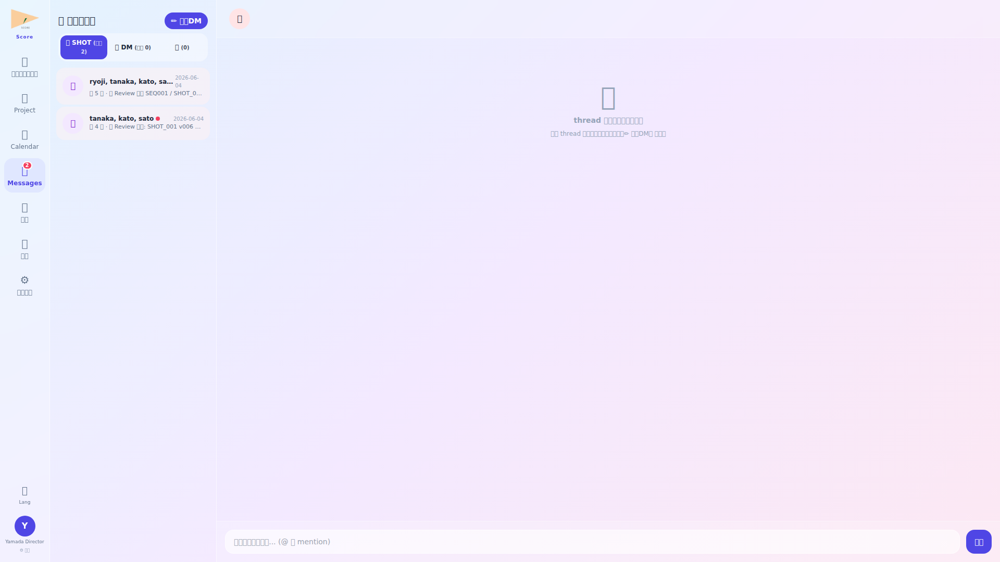
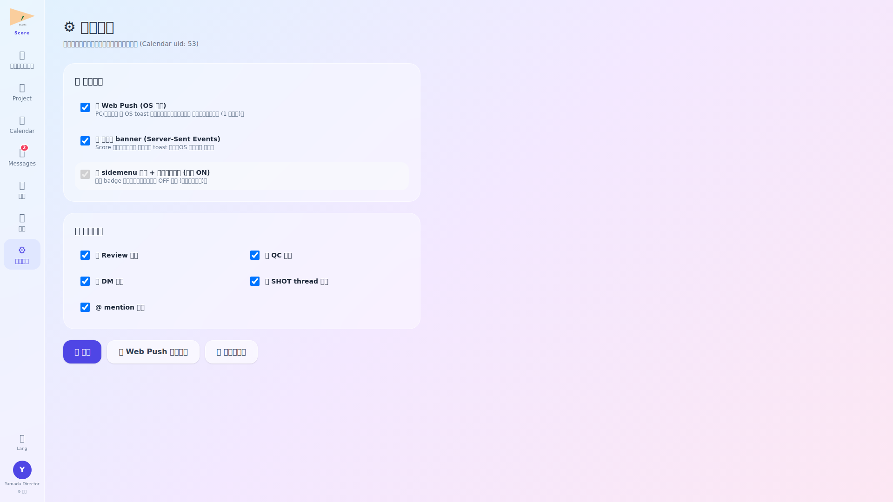

ログイン・朝のルーティン確認

ログイン後、まずルーティン画面で本日の定例チェックリストを確認します。Director は毎朝 QC 待ちショットの件数や未処理の承認依頼を把握してから作業に入ります。
- QC 待ちアイテムが増加している場合は赤バッジで件数表示
- ルーティン完了にチェックを入れると進捗バーが更新される
Director ダッシュボード確認

Director ダッシュボードでは担当プロジェクトの品質状況を確認します。QC 通過率・リテイク率・承認待ちショット数がグラフで可視化されており、どのプロジェクトに注力すべきかを判断できます。
- リテイク率が高いプロジェクトは警告カラーで表示
- 「QC 待ち一覧へ」ボタンから即座に QC ビューワーへ遷移可能
QC ビューワーでショット確認

QC ビューワーではショット映像・静止画・素材ファイルを確認し、品質判定を行います。前バージョンとの比較表示や、フレーム単位での注釈ツールが利用できます。
- 左右スプリットビューで前バージョンとの差分確認が可能
- 「Approve」ボタンで QC 通過、「Reject」でリテイク画面に遷移
リテイク指示入力

QC で Reject となったショットには、具体的なリテイク指示を入力します。テキストコメント・フレーム番号指定・参照画像添付が可能です。入力後「送信」するとコンポジターに通知が届きます。
- 過去のリテイクコメントがタイムライン形式で参照可能
- テンプレートコメントを登録しておくと入力を省力化できる
プロジェクト全体確認

午後は担当プロジェクト全体の進捗を俯瞰します。ショット総数・承認済み数・リテイク中数が集計表示されます。PM との認識合わせに使用する週次サマリーもここからエクスポートできます。
- ショット進捗をプロジェクト横断で比較できるグラフビュー付き
- 「CSV エクスポート」で週次報告資料の自動生成が可能
カレンダー・スケジュール確認

カレンダー画面で試写・マイルストーン・メンバーの休暇スケジュールを確認します。QC レビュー集中日と休暇が重なっていないかチェックし、必要に応じてレビュー日程を調整します。
- 試写イベントはオレンジ色、マイルストーンは青色で表示
- カレンダー上のイベントをドラッグ&ドロップで日程変更可能
退勤報告

退勤前に本日の QC 結果・承認件数・リテイク件数を退勤報告に記載します。特記事項（品質懸念・翌日優先ショット）があれば備考欄に記入して送信します。
- 当日の Approve / Reject 件数は自動集計されてフォームにプリフィル
- 報告内容は PM・Lead のダッシュボードに翌朝反映される
💬 メッセージ — SHOT 関係者 thread + 1対1 DM

Director として QC 依頼が SHOT 関係者 thread に自動投稿される。タブ振り分け (👥 SHOT 3+名 / 💬 DM 2 名) で多数の依頼を整理。階層 title (proj/seq/shot/task) で対象が一目瞭然。
⚙️ 通知設定 — Push / SSE / 画面 badge の三重立て

Director は QC 依頼が中心。Push 通知を ON にすることで離席中も即時把握、SSE で在席中の対応速度を向上。種別 OFF で Review 依頼通知を絞ることも可能。